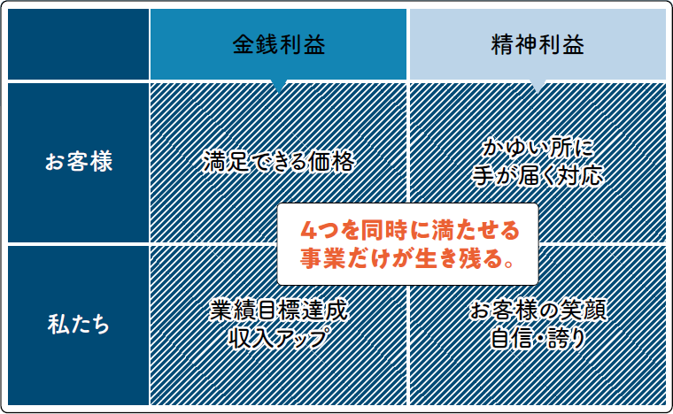
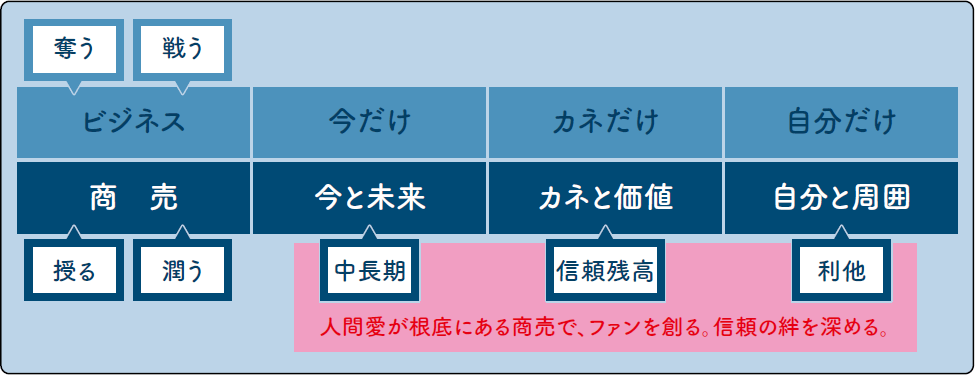
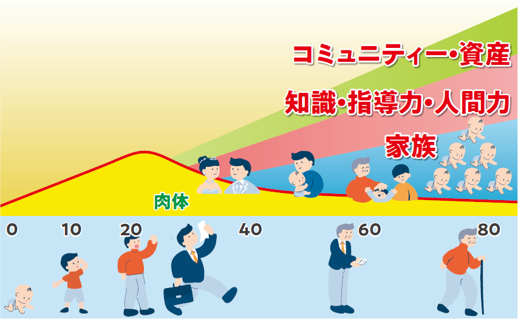
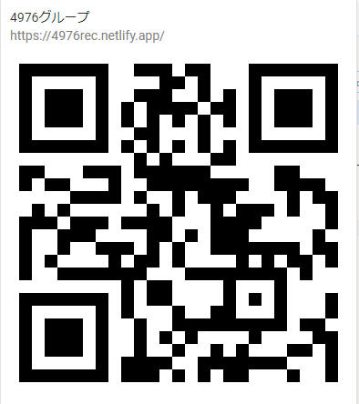

4976
社員一人ひとりが、自分のルールを持ち、
自分の人生を大切にしている。仕事の時
間も家庭での時間も、そして個人の時間
も含めて満たされる日々を幸せに生きる。
つまり「自らの人生を心から愛する生き方」。
よくなろうセオリー
理論

4976グループは、4976理論に基づいて、
「〇〇〇〇〇な企業グループ」を目指し、
〇〇〇〇〇〇な人材を求めています。
-
 目次 [開く]
目次 [開く]
1度の人生、自分が主役
4976グループの社員は、一人ひとりが自分の人生を愛しています。誰のものでもない自分の人生だから、主役になって生きることを心がけています。
「人生の主役になる」というと「自分の人生なんだから当り前だ」と思う人が多いのですが、実は言うほど簡単ではありません。「人生の主役」になるということは、皆さん一人ひとりが“ 自分株式会社の代表取締役” になることを意味しています。代表取締役ですから、自分株式会社で起きた出来事に対する責任は、すべて自分が持つという覚悟を決めなければなりません。親も、友人も、会社も、助けてくれるかもしれないが、最終的な責任を取ってはくれません。もし、皆さんが一人前の大人なら取らせてはいけないのです。
また、責任以前の問題として、自分の人生を生きていない人もいるようです。自分の人生ではなく、親や先生、テレビに出ている有名人等、別の誰かが「いい」と言った人生に一生懸命ハマろうとして汲々とする人生は、本当に楽しいものでしょうか。そんな人生で主役になれるはずもありません。
あなたの自分株式会社は、どのような理念を掲げ、どんなビジョンに向かって、何を強みに突き進んでいくのでしょうか。この質問に自信を持って、答えられる人だけが主役として自分の人生を歩むことができるのです。すぐに見つからなくてもかまいません。しかし、たった1度の人生ですから、大いに悩み、迷って、自分で納得できる答えを見つけ、堂々と自分の人生を生きてもらいたいと心から願っています。
2つの利益
利益には「金銭利益」と「精神利益」の２つがあるのを知っていますか。この２つの利益はどちらが欠けてもダメなんですね。同時に提供することが商売の鉄則です。近年、飲食店や介護施設で働く人々に対する「やりがい搾取」という言葉を耳にする機会が増えてきました。これは２つの利益が「精神利益＞金銭利益」という不等式に陥ってしまい、それを経営者が放置した結果だと言えるでしょう。
お客様にとっての金銭利益とは、当社の場合であれば、満足できる買取価格を提示されることです。一方で、精神利益は、社員の対応に満足すること。そして、商売をする私たちにとっては、お客様の笑顔こそが何よりの精神利益となります。さらには、私たちを信頼してくれるファンが着実に増えること、そういう状況を誇らしく感じることも精神利益と言えるでしょう。その結果として、私たちの金銭利益（＝売上や利益、個人で言えば収入）がアップしていきます。

お客様にとっての２つの利益を満たすと同時に私たちにとっての２つの利益を満たす。そういう領域を発見し、追求している企業は強いですし、将来性もあります。経営者として、社員の幸せを考える時も同じです。私は、報酬の多寡（＝金銭利益）だけでなく、「この会社で働けることが嬉しい」という気持ち（＝精神利益）を同時に供与することにこだわっています。そうでなければ、ココロが満たされた状態で、長く働くことはできません。皆さんにも、ぜひ２つの利益にこだわる会社を選んでもらいたいと思います。
3つの成功
人間が真に成功するためには、３つの成功が不可欠です。成功という言葉に抵抗を感じる人は「幸せ」と置き換えてもかまいません。１つ目は仕事の成功。社会人になると人生の時間の大部分を仕事に費やすことになります。その仕事の時間が、生活の糧を得るためだけの手段になってしまっては充実した人生を送ることはできません。目標を持ち、それを達成することで正当な評価を受け、成長の実感と自己肯定感を得られる場であってほしいと思います。
２つ目は家庭の成功。まだ、年齢的に、自分が結婚し、家庭を持つことに対して具体的なイメージを持てない人も多いかもしれませんね。そんな皆さんにも、自分の育ってきた家庭があるでしょう。笑顔と明るい会話に溢れた家庭で育った人は、勉強も、スポーツも、前向きに頑張れたことでしょう。そして、何より明るく、前向きな性格に育ったはずです。
そして３つ目は個人の成功。仕事に没頭し、大きな成果を上げたビジネスエリートや幸せな家庭を夢見て絵に描いたような優しいパパ＆ママになる人はたくさんいます。しかし、趣味等の自分だけの世界に没頭できる領域において、満足できるだけの成功を手に入れている人は案外少ないものです。第一線で仕事に打ち込めるのは６０〜６５歳くらいまで。平均寿命を考えれば、仕事から離れた後の人生が１５〜２５年くらいあります。家庭も子どもが小さい時は家族みんなで何かをすることも多いですが、中学生にもなれば親より友人を選ぶようになり、親が必要なのはお金が必要な時だけになってきます（笑）。個人差はありますが、その年齢が４５〜５０歳くらいです。
だから、自分の世界が必要だし、そこが充実していないと人間として一気に枯れてしまうんですね。仕事人間ではダメだし、マイホームパパ＆ママだけでも心許ない。皆さんには、若いうちから３つの場で、３つの成功・幸せを意識した生き方をしてほしいと思います。
本当の安定とは…
最近の若い人は「安定志向」だと言われています。でも、これは“ 最近” に限ったことではなく、10年前の若者も、20年前の若者も、私と同世代の30余年前の若者も、皆、不安定より安定を志向していました。これはいつの時代も変わりませんし、そういう考えに傾倒する気持ちもわからないではありません。私が皆さんにお伝えしたいこと。それは、「世の中に安定しているものなど存在しない」ということです。
それは、新型コロナウイルスの感染が証明しました。旅行や宿泊などの観光産業、航空業界は、多くの企業が東京オリンピックという追い風に乗って最高売上を狙うはずでした。オリンピック終了後も続くであろうインバウンド需要を見越して、大きな投資をしてきた企業もたくさんあるでしょう。それが、新型コロナウイルスの感染拡大によって、今後3〜5年は景気が戻らないだろうと予測されるまでになってしまいました。
with コロナの世界ではどうなるのでしょう？
・テレワークが広まり、地方移住者が増え、地方経済が活性化する
・衛生に対する意識が高まり、さまざまなサービスは非接触化・無人化へ向かう
・遠隔診療や遠隔授業など、オンライン化が進行する
さまざまな予測が飛び交っていますが、実際のところは誰にもわかりません。人生は大海でおこなうサーフィンのようなものです。これは私が若い人たちに、ずっと伝え続けていることです。海は穏やかな日もあれば、荒れる日もあります。そういう中で、海に落ちないようにサーフボードをコントロールし続けなければなりません。この真実から目を背け、浮き輪に乗って波のないプールでチャプチャプと浮かぶ…そんな幻想のような世界を手に入れたと勘違いした人は今回のコロナのような大波に飲まれてしまっていることでしょう。
世の中はプールではなく海なのです。ですから「安定」したプールを探すのではなく、サーフボードを操る技術を「安定」させるべきなのです。皆さんには、ありもしない安定を追いかける幻想から一日も早く目を覚まし、「サーフボード」を使いこなすスキルを身につける覚悟を持っていただきたいと思います。
愛情の反対の言葉
愛情の反対の言葉は何でしょう？
そう尋ねられたら、皆さんは何と答えるでしょうか。
この問いには、「憎しみ」「憎悪」「嫌悪」「毛嫌い」「厭忌」「厭悪」「唾棄」「嫌忌」という“ 強いマイナスの感情を表す言葉” を答える方が多いようです。国語のテストであれば、それで正解ですが、私はそうは思いません。
愛情の反対は、「無関心」です。
愛情も、憎悪も、プラスかマイナスかの違いはあるにしても、相手に対して強い関心を持っているという点では共通しています。そういう感情が一切湧かない状態を「無関心」と言います。
多くの人にとって、強い負の感情で追いかけられる状態は、うれしくも、ありがたくもないでしょう。
だから、負の感情を振りかざして、執拗に追いかけてくるような人に対しては距離を取ってもいいし、場合によっては逃げてもかまいません。しかし、愛情を持って誠実にコミュニケーションを取ろうとしてくれる人に対して、無視は絶対にしてはなりません。
SNS によるコミュニケーションが普及するようになって、「既読スルー」という言葉が生まれました。そして、就活においても企業からの連絡に対して、既読スルーで切り抜けようとする人が増えているように感じています。大量に送られてくる企業からの情報にうんざりする気持ちも理解できます。勝手に送りつけられてきた情報にまで丁寧に対応しろとはいいません。しかし、選考中の企業からの連絡には、たとえその企業を辞退しようと考えていたとしても「既読スルー」はご法度です。これは人の道に反しています。そのことを十分に理解してください。約束をした相手、誠実に対応すべき相手からの連絡に対して
・メールを読まない、一切返事をしない人
・電話に出ない、折り返しをしない人
・既読スルーで察してもらおうとする人
が社会に出て活躍するとは到底思えないのです。
反対の立場になればわかるでしょう。皆さんが社会人になって上司やお客様に対して、必死になって連絡をしているにも関わらず、「メールを読まない」「電話に出ない」「既読スルーで察してもらおうとする」という対応されたら、どんな気持ちになるでしょうか。
愛情を持って、誠実に対応してくる人には、絶対に無関心はやめましょう。社会人として、営業マンとして、そして何より人として。
悩む時期
小学生の時の夏休みの宿題を思い出してください。皆さんは、“ 先に済ませる派” でしたか？それとも“ 最後に追い上げる派” でしたか？
私は断然“ 最後に追い上げる派”勉強があまり好きではなかったので、なるべく後回しにしていました（笑）
ただ、大人になって分かったことがあります。それは、「人生は夏休みの宿題のようにはいかない」ということです。
私は、『幸せや楽しい時間にも、苦労や苦しい時間にも、利息がつく』と考えています。利息ですから、後になるほど大きくなります。夏休みの宿題も同じ。嫌いだった計算ドリルも夏休みの序盤なら、それほど苦しくありませんが、残り日数を片手で数えられる終盤は、子どもながらに間に合わないかもしれない焦燥感やこの世の終わりのような絶望感を抱いたはずです。この焦燥感や絶望感が“ 利息” です。夏休みの宿題が教えてくれる人生の真実は、『苦労は先、快楽は後にした方が心の幸せは大きい』ということ。
私たちと皆さんの世代の大きな違いの１つが検索エンジン。答えがわからない時、ゴチャゴチャ悩みたくない、すぐに正解が欲しくなって検索エンジンに頼る人は少なくありません。知らない言葉や歴史、文化の背景を調べるのに検索エンジンが便利です。しかし、仕事や家庭等、人生の問題はどんなに検索しても正解が見つかることはありません。あなたが自分の頭で考え、見つけ出すしかないのです。自分の頭を使ってトコトン悩むから、思考が深まり、人生哲学が練磨されていきます。そして、練磨された人生哲学を持った人だけが、未来において発生する複雑で正解のない問題に対して、納得できる決断を下すことができるのです。若い時、悩むことを嫌って、ネットに答えを求めたり、問題に立ち向かうことを忌避して、人生哲学を磨くことを怠ると、40 〜50 代でより複雑な問題に直面した時、思考停止に陥ってしまいます。
夏休みの宿題は一夜漬けでも何とかなりましたが、人生はそうはいきません。だから、20 代はドンドン悩んでください。利息が付く前に悩んだ方が楽なのは夏休みの宿題が証明しています（笑）
「ビジネス」をするより
「商売」をしよう
私たち4976グループは「ビジネス」はしません。私たちがやっているのはビジネスでなく「商売」です。
言葉遊びのようで、何だか煙に巻かれた感じかも知れませんが、「ビジネス」と「商売」には明確な違いがあります。「ビジネス」は利益至上主義。効率を最優先し、“ 今だけ”“ カネだけ”“ 自分だけ” の得を追求していきます。そこには、殺伐とした奪う力学が働き、そこに関わる社員やお客様のココロは次第に荒んでいきます。一方で、「商売」は幸せ増大主義。「損して得取れ」の格言通り、一見、非効率に見えるようなことでも、それが将来の良好な人間関係や笑顔に繋がるのであれば、喜んでやってしまう。今だけでなく“ 未来も”、カネだけでなく“ 価値も”、自分だけでなく“ 周囲も”。そういう視点で、人間愛を根底に置きながら、お互いに与え合い、長いスパンで取り組むものなのです。

八百屋のおじさんがリンゴを1つおまけしてくれるのも、定食屋のおばちゃんが無料でご飯を大盛りにしてくれるのも、すべて商売の基本に基づいた行為なんですね。商売を貫けば、「ファン」という財産が確実に増えていきます。その結果、私たちの商売も一歩一歩、着実に広がっていきます。性急に、お金を追求する無闇なビジネス拡大よりも、ファンづくりを地道に行う商売による成長こそが、私のめざす理想なのです。
右肩上がりの人生を送るために
人生のピークは（＝最高到達点）は、人生の最期に迎える。
人生の登山に例える人がいます。人生の前半は頂きを目指して山を登り、ある時点から人生の最期に向かって下山するという考え方です。こういう考え方もわからないではありません。しかし、私は人生のピークは、人生の最期でありたいと思っています。
そう考えると、人生は、時を経過する毎に良くなる“ 右肩上がり” でなければなりません。しかし、人間が肉体的に成長できるのは、せいぜい20代中盤までです。個人差はあっても30代に突入すれば、誰しもが肉体的な衰えを感じざるを得ません。この事実は皆さんが想像している以上に無情で、残酷です。
一方で、肉体が衰え出す頃に、積み上がってくるのが精神や資産、人脈・コミュニティー、能力、家族等の要素です。たくさん悩めば人生哲学が練磨されると先述しましたが、正にその通りで、20代では慌てふためいていた出来事に遭遇しても、ドンと構えて鷹揚に対処できるようになります。これは精神が成長した証拠でしょう。同様に、様々な知識や能力を持った人と知り合いになり、彼らがあなたに力を貸してくれるようになります。それはあなたが築いてきた人脈やコミュニティーが発達したからに他なりません。これらの積み増しが、肉体が衰える分よりも大きければ、トータルであなたの人生は右肩上がりになっていきます。しかし、世の中にはこれらの積み増しが乏しく、肉体の衰えと共に人生の下降線を辿ってしまう人がいるのも事実です。
この違いは何から生まれるのでしょうか？
それは、この4976理論に書き綴ったさまざまな「考え方」を素直に受け入れ、人生において実践するかどうかだと思います。いい話を聞いても実践する人は10%、実践しても継続する人はその10% だと言われています。この時点で100分の1 です。とすれば、素直に実践すればたった1％の希少な存在になれるわけです。

皆さんも、この理論を書かれた内容を実践し、有意義で納得できる就職活動を、そして、幸せと価値を感じられる人生を歩んでください。
最後まで、お読みいただき、ありがとうございました。
スマホでの閲覧推奨 
中途採用